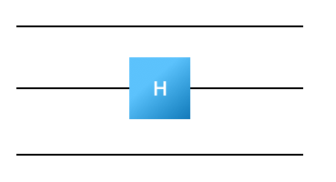

Simulator S#
In this simulator, we will primarily represent the state in Dirac notation as a list of tuples of (amplitude,BitString) as we did in the Dirac Notation section.
For example, you could assume that the current state looks like
myState=[
(numpy.sqrt(0.1), '00'),
(numpy.sqrt(0.4), '01') ,
(-numpy.sqrt(0.5), '11' )
]
To build simulator S, we then need to learn how each gate changes the state of the quantum system.
Hadamard#
Let’s start with the Hadamard gate on a single wire.

One way to understand this gate is to understand what it does to \(|0\rangle\) and \(|1\rangle\).
In particular a Hadamard takes
It turns out because quantum mechanics is linear, this is all that we need to know because then
Now, suppose that instead of being on a single wire, a gate is on the middle of three wires. 
Sneakily what’s happening is that the gate acts on all three wires; it just does nothing on the wires that we don’t write it on (the gate is applying the identity operator).
We should describe what happens on all the binary numbers \(|000\rangle, |001\rangle, ... |010\rangle ... |111\rangle\). We can think about the Hadamard applied to \(|010\rangle\) as \(|0\rangle H|1\rangle |0\rangle\) which is
We now need to write a function
def H(wire,inputState):
# do stuff
# return newState
To accomplish this, just go ahead and loop through you old state and apply the gate to every element of your old state:
for element in inputState:
newState.append(...) # apply the gate to one basis element and get some new basis element(s)
newState.append(...)
In some sense, it is the trickiest of the gates you are working with. If the wire the Hadamard gate is being applied to is 0, you need to push back two new tuples:
the first one is the same binary number with an amplitudes which is scaled by \(1/\sqrt{2}\)
the second one is the binary number which replaces the 0 with a 1 on that wire and is scaled by \(1/\sqrt{2}\)
If the wire the Hadamard is being applied to is a 1, you need to push back two new tuples:
the first one is the same binary number with an amplitudes which is scaled by \(1/\sqrt{2}\)
the second one is the binary number which replaces the 0 with a 1 on that wire and is scaled by \(-1/\sqrt{2}\)
Faster and More Elegant Python
Although we’ve described the process as using a for-loop you could actually do better by using a list comprehension like
myState=[H(wire1,state) for state in inputState]
where the function H takes only a single state - i.e. (amplitude,binary_number) - and returns a list of the new (amplitude,binary_numbers) which come from the application of the Hadamard.
If you do it this way, myState will be a list of lists which you will need to turn back into a single list. You can do this using
myState=list(itertools.chain(*myState))
You may end up with duplicate states when you do this - i.e. two states such as
myState=[
(-numpy.sqrt(0.125), '11' )
(numpy.sqrt(0.1), '00'),
(numpy.sqrt(0.4), '01') ,
(-numpy.sqrt(0.125), '11' )
]
Don’t worry about this at the moment. You’re going to fix this problem in a couple minutes. It’s worth noticing that the Hadamard will, generically, double the number of terms.
Go ahead and check your function by sending it a state (and a wire) and see if you get the right answer.
Phase Gate#
The Phase(\(\theta\)) gate works similary to the Hadamard. It’s a single gate which applies to one wire

It is actually pretty simple to deal with in Simulator S. For each binary number, you just need to check if the phase gate has a 1 on the relevant wire. If it does, you need to change the amplitude by \(\exp[i \theta]\). Notice that no matter what wire the gate is applied to, you end up with the change to the overall amplitude.
Write a function
def Phase(wire, theta,inputState):
# do stuff
# return newState
which applies the phase gate to state. Again, like you did with the Hadamard state, go ahead and test that the code works.
CNOT#
The CNOT gate differs in that it spans two wires

and has an orientation associated with it. The pictured CNOT is “right-size up” and the “control-wire” is blue.
Because it spans two wires, we need to describe how it acts on four basis elements.
Conceptually the controlled-not is a gate which not’s the second wire when the control wire is one. Here we’ve described the equations when the control wire is atop the not-wire. It is left as an exercise for the reader to describe how this changes when the control wire is lower then the not-wire but your code should work for both.
Write code to implement
def CNOT(controlWire,notWire,inputState):
# do stuff
# return newState
For the CNOT gate, this is very easy:
for every basis element, look at its current binary number.
check if the binary number is 1 on the control-wire. If it is, flip the not-wire
append back to newState a tuple with the same amplitude but a different binary number.
Duplicate States#
Now we will deal with the fact that you will occassionally get duplicate states. This actually can only happen after the application of the Hadamard.
Write some code which takes the state and adds duplicates (i.e. myState=AddDuplicates(myState) should give
myState=[
(numpy.sqrt(0.1), '00'),
(numpy.sqrt(0.4), '01') ,
(-numpy.sqrt(0.5), '11' )
]
when applied to
myState=[
(-numpy.sqrt(0.125), '11' )
(numpy.sqrt(0.1), '00'),
(numpy.sqrt(0.4), '01') ,
(-numpy.sqrt(0.125), '11' )
]
Make sure you also remove any term which has an amplitude zero.
Putting it Together#
Once you have implemented these functions, you now need to put it all together. The next step is to configure your program to read the input from a file and then run each of the gates in hand (apply gate to current state; get new state; repeat). Parsing input is a bit annoying, so we’re happy to give you this piece. Go ahead and use the following if you want.
def ReadInputString(myInput_lines):
myInput=[]
myInput_lines=myInput_lines.split('\n')
myInput_lines = [ i for i in myInput_lines if i!='']
numberOfWires=int(myInput_lines[0])
for line in myInput_lines[1:]:
myInput.append(line.split())
return (numberOfWires,myInput)
Then you can read the gate by doing things like
numberOfWires,myInput=ReadInputString('''
3
H 1
H 2
P 2 0.3
CNOT 2 1
H 1
H 2
CNOT 2 0
''')
or alternatively from a file like test.circuit by
numberOfWires,myInput=ReadInputString(open('test.circuit').read())
At this point you should be able to take a circuit description and print out the quantum state of the system at the end. You should be using your pretty print functions to print this out in a nice way using Dirac notation.
Example input file
For testing you can use the input above (whose answer is given on the Simulator page). Also, you can find an example input file for testing here: images/example.circuit.
Your output (in Dirac notation) should be
[((0.4999999999999999+0j), '0000'), ((0.4999999999999999+0j), '0011'), ((0.4502235511763384+0.21748276705561506j), '1100'), ((0.4502235511763384+0.21748276705561506j), '1111')]
Congrats! At this point you should have a basic working simulator.
Grading
Hopefully at this point you’ve tested your simulator and are convinced that it works. To grade your simulator, run it on rand.circuit below. You should paste your results to this output into your document.
Tests: